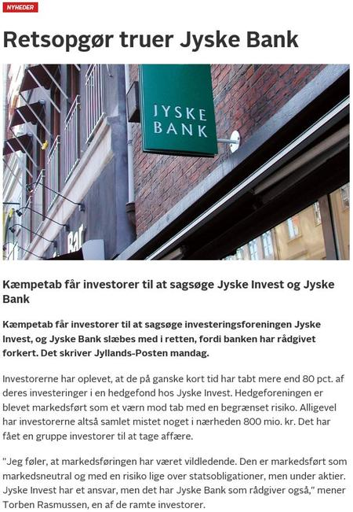

Medie Omtale
Medie Omtale 2018

Eksempler på medie omtale 2008-14
Morningstar Sep 2008 ↗TV2 Nov 2008 ↗TV2 Nov 2008 ↗Berlingske April 2009 ↗Jyllands Posten Juni 2009 ↗TV2 Juni 2009 ↗Børsen Juli 2009 ↗DR Oktober 2009 ↗DR Oktober 2009 ↗TV2 Oktober 2009 ↗TV2 Oktober 2009 ↗TV2 Oktober 2009 ↗Børsen September 2012 ↗Børsen September 2012 ↗Børsen September 2012 ↗Finanswatch September 2012 ↗Børsen September 2012 ↗Børsen September 2012 ↗Børsen September 2012 ↗Fyens.dk, April 2014 ↗